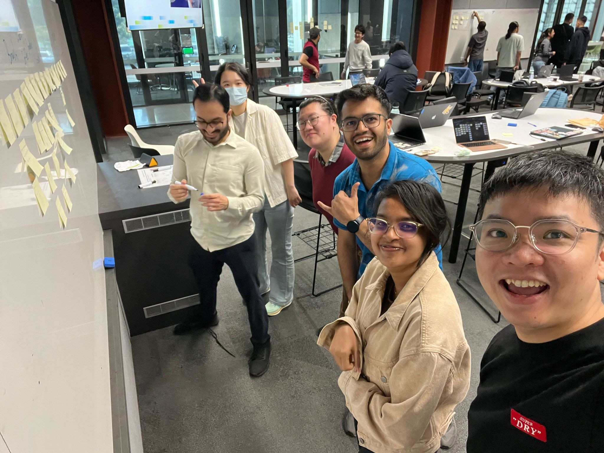
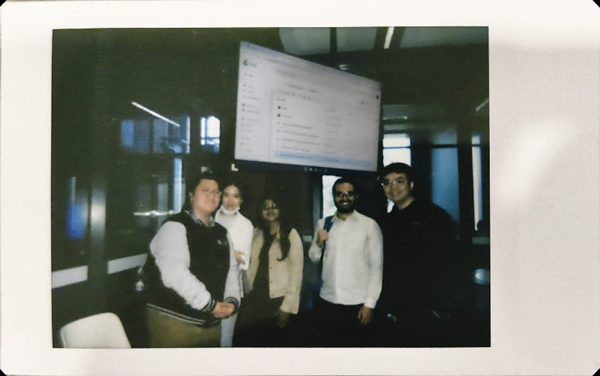
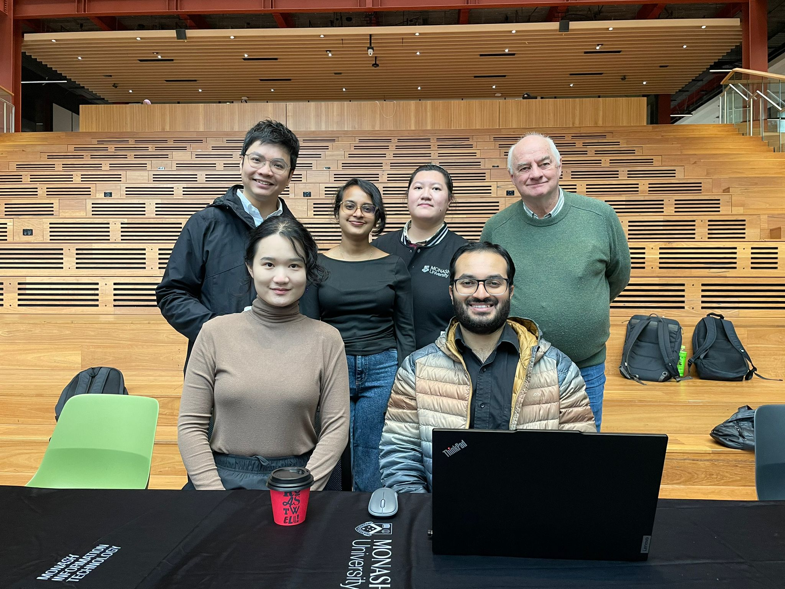
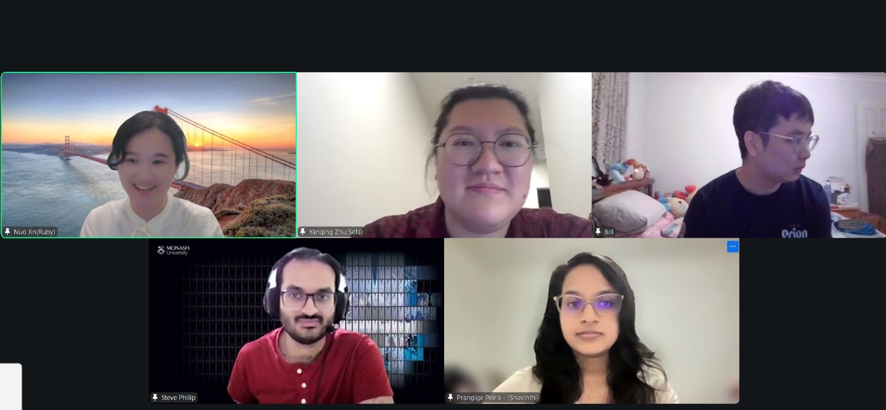
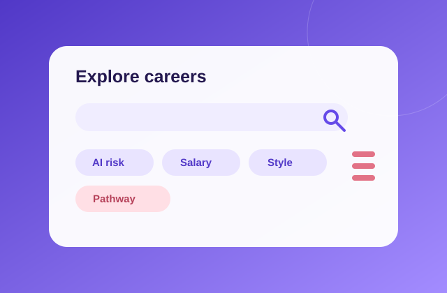
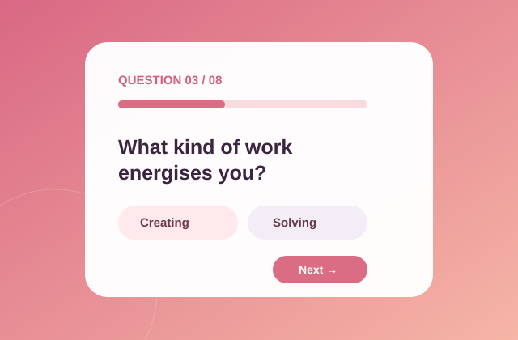
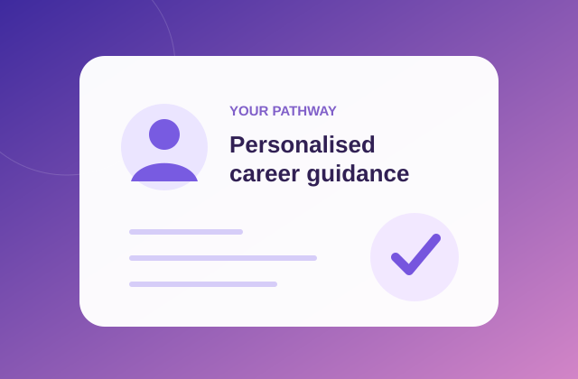

Make career choices clearer for students.
Monash University FIT Capstone
Meet TEAM
Product. Data. Engineering.
Meet TEAM
The Turing Lab
Five students building PathwayIQ so career decisions stop being guesswork.
Our story
Behind every build is a story.
We started with one question: how can students make career decisions with more confidence?
Over one semester, five people with different strengths turned that question into PathwayIQ. Between planning sessions, workshops, online catch-ups and plenty of iteration, we built more than a product. We learned how to build as a team.




Turn research, data and AI into PathwayIQ.
Share the product, the lessons and the laughs.
Our product
Meet PathwayIQ.
A smarter career discovery platform designed to help students explore, compare and choose pathways with confidence.
Visit PathwayIQ
Product walkthrough
Drive backup ↗
Why it matters
PathwayIQ brings career, pathway, salary, shortage and AI-impact information together so Victorian students can make more informed career decisions.
How it works
From uncertainty to a clearer next step.
Most loved page
Waiting for votes
A simple six-step journey designed for students who may not know where to begin.
Choose a starting point.
Discover possible directions.
Search and filter careers.
Understand a role in detail.
See trade-offs side by side.
Turn research into a decision.
Presented byShavinthi
Data signals
Career information, made easier to read.
PathwayIQ structures complex career data into signals students can use while exploring and comparing options.
Career categories
Pathway options
Salary
Skills
Shortage signals
AI impact
Work style
Presented byBill
Technical thinking
What a stronger next version needs.
The current prototype validates the journey and information architecture. The next iteration can strengthen the platform underneath it.
- Backend hardening
- Data update pipeline
- Authentication and privacy design
- Accessibility review
- Recommendation logic
Presented bySteve
Cybersecurity thinking
Trust has to grow with the product.
As PathwayIQ becomes more personalised, security and privacy need to remain part of the design from the start.
- Protect student profile and resume data
- Use secure authentication and access controls
- Minimise the personal data we collect
- Review third-party AI and data integrations
- Build trust through transparent recommendations
What's next
Features on our roadmap.
PathwayIQ will continue growing into a more personalised, practical career planning companion.
Presented byNora Jin

Smarter pathway filters
Explore + Compare
Filter by AI risk, salary, pathway and working style.

A focused redesign
Quiz experience
Keep each question comfortably within one screen.
More pathways to explore
Career database
Add richer progression requirements and personalised routes.

Advice shaped around you
Personalised AI
Use resume and quiz insights to recommend pathways.
The crew
Five specialties.
Five specialties.
One shared build.
Each person owns a distinct part of PathwayIQ, from security and AI through to delivery.
Connect with us
Curious about the build?
Reach out to any team member on LinkedIn. We are always happy to talk about PathwayIQ and the work behind it.
View the team